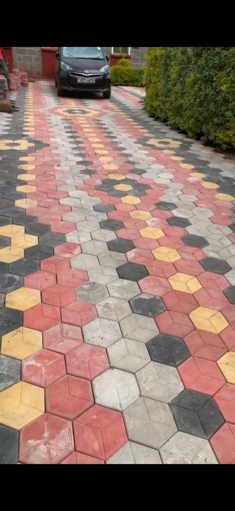

PEAK LEGACY HARDWARE • NYAHURURU
Gypsum Boards & Accessories
Gypsum boards, channels, studs and related interior finishing materials for residential and commercial projects in Nyahururu. Send your list for current availability and quotation.
Ask for current options
What we can help you with
Peak Legacy Hardware supplies and supports gypsum boards & accessories requirements for homeowners, fundis, contractors, developers and property owners in Nyahururu and surrounding areas. We focus on practical product selection and a straightforward enquiry process rather than publishing outdated prices.
Request a quotation
Send us the product, approximate quantity, project location and any photo or drawing that helps us understand the requirement. We confirm current pricing, availability and delivery before you buy.
WhatsApp Peak Legacy